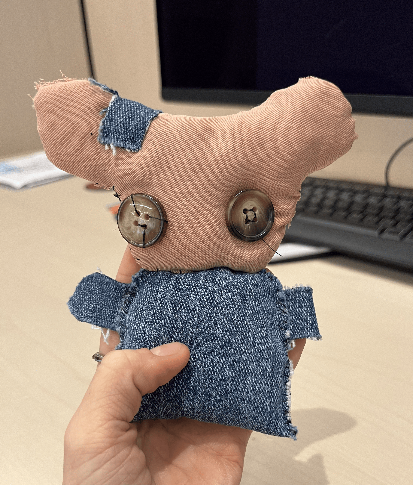
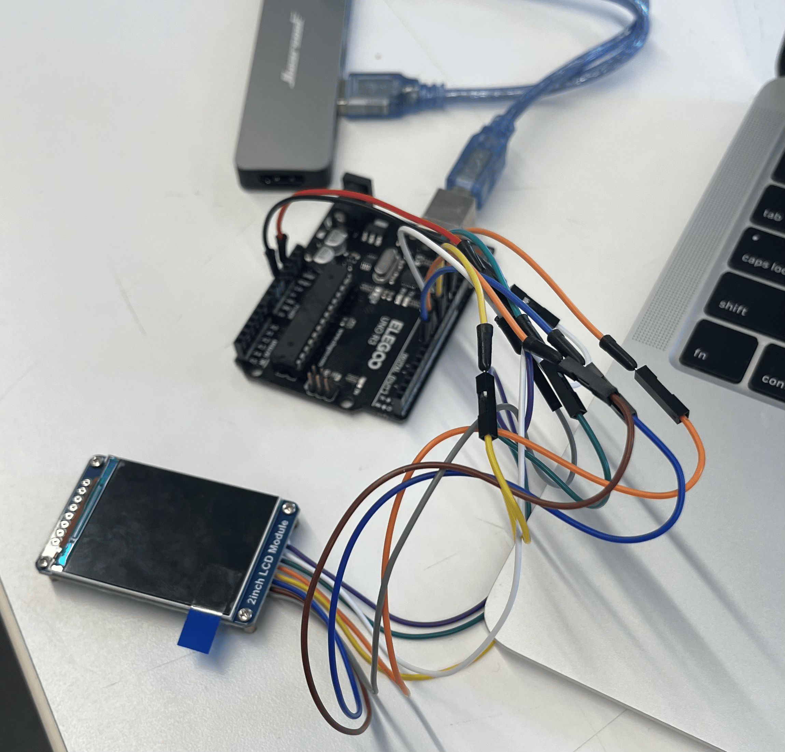
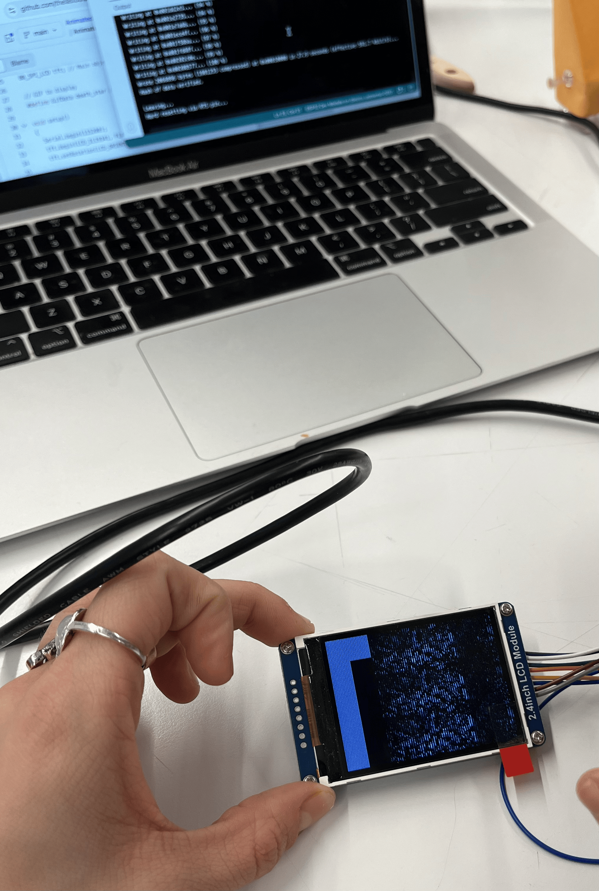
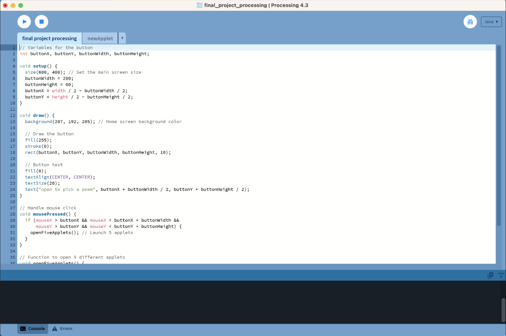
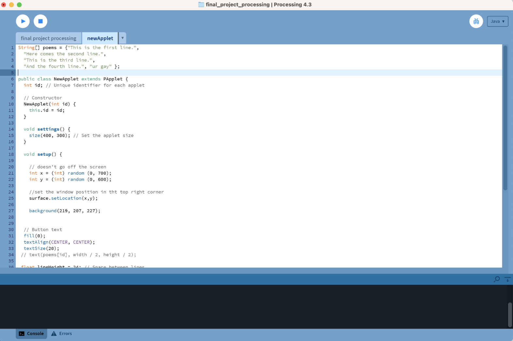

Soft Sculpture — Arduino & Processing
tender evidence
A handmade doll, a glowing stomach, and the version of yourself that existed before you knew what you were carrying.
There is a version of you that still exists somewhere — unbothered, unself-conscious, purely present in the world. tender evidence is an attempt to hold that version carefully, to look at her without nostalgia or grief, but with genuine wonder at what she already was.
The work takes the form of a handmade doll — soft, imperfect, sewn by hand — with a small screen embedded in her stomach. On that screen, home videos play: footage of me as a child, moving through the world with a lightness I didn't know was remarkable at the time. Alongside each video, poems appear on an adjacent monitor — written from the present, reaching back toward the past with tenderness rather than sorrow.
The Doll as Archive
The doll is both object and vessel. She is handmade in the way childhood memories are — imprecise, warm, carrying the texture of the hands that made her. The screen in her stomach is not a wound; it is a window. A place where the past plays out, looping and luminous, inside something that holds it gently.
Children are deeply embedded in their environments — they absorb, reflect, and become what surrounds them without knowing it. This piece isn't about what was hard; it's about what was vivid. The way a Saturday afternoon could feel infinite. The way joy didn't need to be earned yet.
Poetry as Accompaniment
Each video is paired with a poem that lives on the screen beside it. The poems don't explain the footage — they accompany it, the way a second person sitting next to you in a dark room might. They speak to the child in the video without trying to reach her, acknowledging the distance between then and now with something closer to reverence than regret.
Processing drives the video playback and text rendering, while Arduino handles the embedded screen — the two systems working together to bring something analog and something digital into the same soft body.
What This Is Really About
As we grow older, we become fluent in a language of self-awareness that the child version of us didn't speak. We gain context, perspective, understanding — and sometimes that understanding reframes what came before. tender evidence asks: before all of that reframing, what was already there? What joy was already present, fully realized, not waiting for anything?
The child in the videos isn't lacking something. She is complete. This project is an act of witnessing her — not to fix or reclaim anything, but simply to see her clearly, with the eyes of someone who loves her.
Documentation — Full Project
Process Photos





Process — Video Documentation